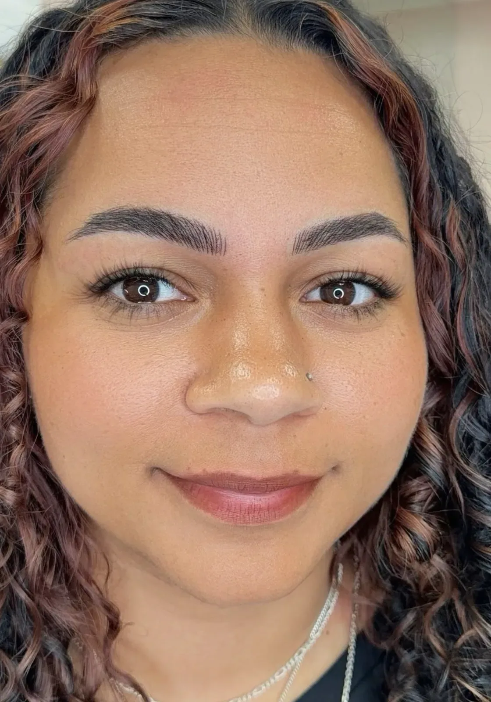
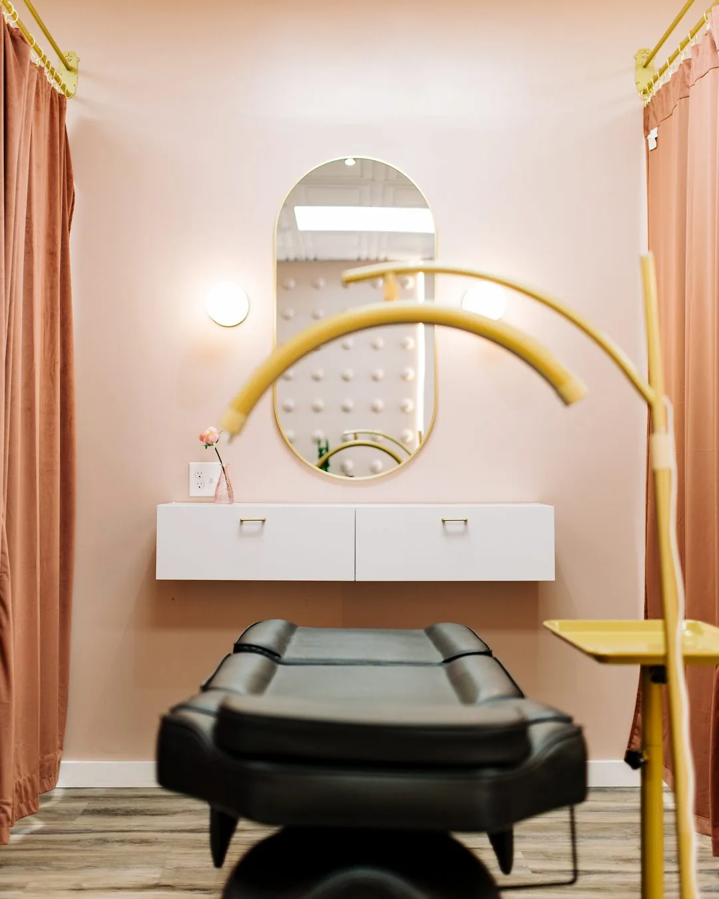
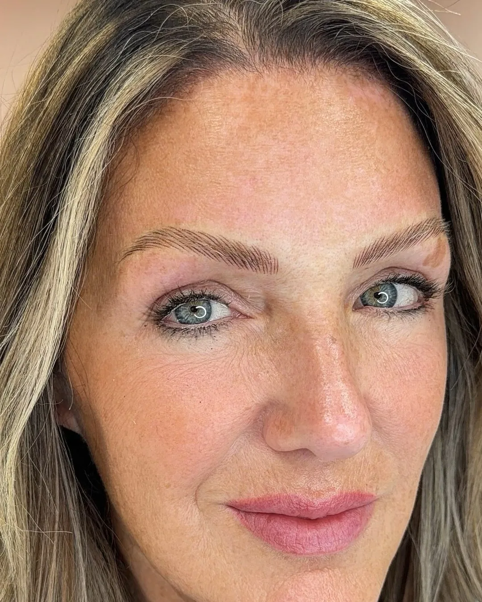

Hair strokes, one by one
Nano Brows in Salem, NH
Nano Brows in Salem, NH is done at 117A Main Street, on Route 97, the studio's New Hampshire location. Because Nano Brows is machine work, it falls under New Hampshire's full Body Artist license, which Adriana Souza Santos holds (4283). It costs $650 with Livy or $990 with Adriana, 2nd session included.
Starting at $650 with Livy $990 with Adriana
- 20+
- Years in the industry
- 5,000+
- Procedures performed
- EN & PT
- Consultations
Nano Brows in Salem, NH, Healed
Real results from the studio, photographed as they healed.
1 34
Nano Brows and New Hampshire Law
New Hampshire has a shortcut for microblading only: under RSA 314-A:2, IV a cosmetologist or esthetician can microblade eyebrows with an added certificate. That exception names microblading of eyebrows and nothing else. Nano Brows is done with a digital machine, so look for the full state Body Artist license.
| What to check | At this studio |
|---|---|
| State Body Artist license (OPLC) | 4283, Adriana Souza Santos, valid through 18 July 2028 |
| Town of Salem artist license | BODA-10, Permanent Make-Up Artist |
| Town of Salem establishment license | BODE-4, for 117A Main Street |
The state license can be checked at forms.nh.gov/licenseverification, by name or by number.
Nano Brows or Nano Combo? What Salem Clients Choose
Nano Brows is strokes only; Nano Combo Brows adds soft shading behind the strokes for a fuller, more finished look. Both cost the same, $650 with Livy or $990 with Adriana, so the choice in Salem comes down to how much definition you want to wake up with.
A Salem client who chose the combo put it this way: “My favorite part is waking up every morning and my brows already look DONE” (Courtney R., September 2026). Clients who want brows that read purely as hair stay with strokes. Both are compared at the consultation: see Nano Combo Brows in Salem.
The Salem, NH Studio

Salem is the newer of the two studios, and Nano Brows is done in a private treatment room over about three hours. “Adriana created the eyebrows I’ve always wanted. She is meticulous” (Linda R., September 2026, on Fresha).
Who Drives to Salem for Nano Brows
Salem sits just over the Massachusetts line on Route 97, near I-93 Exit 2, so it draws clients both from southern New Hampshire and from Methuen, Haverhill and North Andover. There is no passenger rail to Salem; plan to drive.
| Town | Driving distance |
|---|---|
| Methuen, MA | 4.5 mi |
| Windham, NH | 5.3 mi |
| Pelham, NH | 6.8 mi |
| Haverhill, MA | 8.4 mi |
| North Andover, MA | 8.7 mi |
What Nano Brows Look Like Once They Have Healed

Nano uses a single ultra-fine needle on a digital machine, so each stroke is thinner than a blade stroke and sits more evenly on mature or oily skin.
Which Licenses Cover This Work in Salem, NH?
Two levels apply in New Hampshire. The state issues Body Artist license 4283 to Adriana Souza Santos, valid through 18 July 2028 and verifiable at the state’s own public lookup. The Town of Salem separately licenses the artist as a Permanent Make-Up Artist under BODA-10 and the establishment under BODE-4.
| License | Classification | Number | Valid through |
|---|---|---|---|
| New Hampshire OPLC | Body Artist | 4283 | 18 Jul 2028 |
| Town of Salem | Permanent Make-Up Artist | BODA-10 | 28 Feb 2027 |
| Town of Salem | Body Art Establishment | BODE-4 | 28 Feb 2027 |
Check the state license yourself. New Hampshire publishes a lookup at forms.nh.gov/licenseverification. Search Adriana Souza Santos, or license 4283, and the state confirms the status without relying on anything published here.
The town license is worth noting: Salem issued BODA-10 specifically as a Permanent Make-Up Artist license under Salem Chapter 433, not as a general tattoo license.
How Nano Brows Works
An ultra-fine needle on a digital machine places individual hair-like strokes, with less trauma than a hand blade. The full technique guide, the healing timeline and who should wait are on the main Nano Brows page and in the aftercare guide.
Nano Brows in Salem, NH: Questions
Yes, at the Salem studio, 117A Main Street, on Route 97. Phone (978) 223-7496. Open Monday through Saturday, 10:00 a.m. to 6:00 p.m., closed Sunday.
The certificate in RSA 314-A:2, IV covers microblading of eyebrows only. Nano Brows is machine work, so ask for the state Body Artist license. At this studio that is license 4283.
$650 with Livy or $990 with Adriana, with the 2nd session included. The yearly touch-up is $350 with Livy or $495 with Adriana.
Same price, different finish. Strokes alone look like hair; the combo adds shading for a fuller, made-up look. The artist shows you both at the consultation.
The price list is the same at both studios. Clients from Methuen, Haverhill or North Andover are usually closer to Salem; clients along I-93 south of the line are usually closer to Wilmington.
More at the Salem, NH Studio
Every service on the menu is performed at the Salem, NH studio, at the same published prices.
Ready to Book Nano Brows in Salem, NH?
Book online at 117A Main Street, or call (978) 223-7496. Prefer Wilmington, MA? See that studio's Nano Brows page.
Book Now in Salem